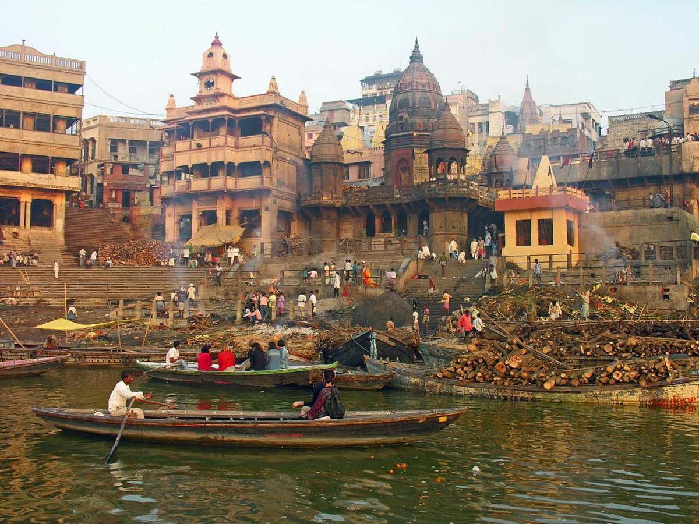
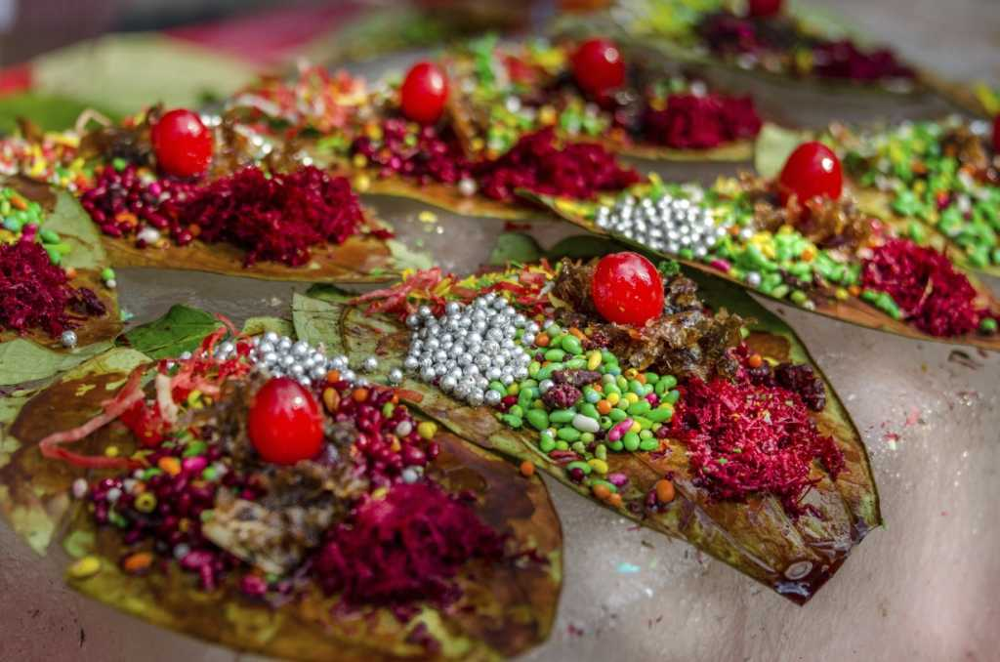

About Varanasi
Varanasi, or Benaras, (also known as Kashi) is one of the oldest living cities in the world. Varanasi`s Prominence in Hindu mythology is virtually unrevealed. Mark Twain, the English author and literature, who was enthralled by the legend and sanctity of Benaras, once wrote :
“Benaras is older than history, older than tradition, older even than legend and looks twice as old as all of them put together”.
The land of Varanasi (Kashi) has been the ultimate pilgrimage spot for Hindus for ages. Hindus believe that one who is graced to die on the land of Varanasi would attain salvation and freedom from the cycle of birth and re-birth. Abode of Lord Shiva and Parvati, the origins of Varanasi are yet unknown. Ganges in Varanasi is believed to have the power to wash away the sins of mortals. Hindus believe that one who is graced to die on the land of Varanasi would attain salvation and freedom from the cycle of birth and re-birth.
Famous Places
Varanasi is a popular tourist destination known for its temples, ghats, museums, and Puranic places.2 The Sankat Mochan Temple is home to a large group of monkeys and offers Besan Laddu to Lord Hanuman. The Kashi Vishwanath temple is dedicated to Lord Shiva and is known for its magical vibes.1 Assi Ghat, the southernmost main ghat in Varanasi, has a Shiva lingam beneath a sacred fig tree that attracts hundreds of pilgrims every day. Varanasi is also home to the Buddhist site Sarnath, which attracts tourists from abroad
Kashi Vishwanath Temple
The Kashi Vishwanath Temple is a famous Hindu temple dedicated to Lord Shiva. It is located in Vishwanath Gali, near Varanasi, Uttar Pradesh, India. The temple is one of the most sacred pilgrimage sites for Shaivites and is among the twelve Jyotirlinga.
Location

Manikarnika Ghat
Manikarnika Ghat (Hindi: मणिकर्णिका घाट) is one of the holiest[1] cremation grounds among the sacred riverfronts (ghats), located on the Ganges, in the city of Varanasi in the Indian state of Uttar Pradesh. In Hinduism, death is considered a gateway to another life marked by the result of one's karma.
Location
Sankat Mochan Hanuman Temple
Sankat Mochan Hanuman Temple is a Hindu temple in Varanasi, Uttar Pradesh, India and is dedicated to the Hindu God Hanuman. The temple was established by famous Hindu preacher and poet saint Sri Goswami Tulsidas in the early 16th century and is situated on the banks of the Assi river.
Location
Temples in Varanasi
Varanasi is Said to be the point at which the first jyotirlinga, the fiery pillar of light by which shiva manifested has supremacy over others gods, broke through the Earth’s crust and flared towards the heavens. More than the Gaths and even the Ganga, the Shivalinga installed in the temple remains the devotional focus of Varanasi. Near the Kashi Vishwanath temple, there is a nice temple of Devi Annapurna , believed as the “Godess of Fooding”.
Kashi Vishwanath Temple
The Kashi Vishwanath Temple is a famous Hindu temple dedicated to Lord Shiva. It is located in Vishwanath Gali, near Varanasi, Uttar Pradesh, India. The temple is one of the most sacred pilgrimage sites for Shaivites and is among the twelve Jyotirlinga.
Location
Kaal Bhairav Mandir
Kaal means both Death and Fate, in addition to meaning Black. He is the black one who has also assumed the duties of the God of Death in Kashi. Even Death, it is said, is afraid of Kaal Bhairava. Kaal Bhairav's temple today is one of the most interesting sites in Varanasi.
Location
Sankat Mochan Hanuman Temple
Sankat Mochan Hanuman Temple is a Hindu temple in Varanasi, Uttar Pradesh, India and is dedicated to the Hindu God Hanuman. The temple was established by famous Hindu preacher and poet saint Sri Goswami Tulsidas in the early 16th century and is situated on the banks of the Assi river.
Location
Famous Food
Street food is an essential part of the Indian culture and cuisine. There are a number of street foods from across the country that are famous, but nothing can beat the hot and crispy kachoris and samosas from Benaras or Varanasi. The holy city is situated on the banks of the river Ganges in the state of Uttar Pradesh and its food is defined by its culture and tradition. According to Chef Ashwani Kumar Singh from the Leela Ambience Convention Hotel in Delhi, "The food of Benaras or Varanasi is influenced by its people. You will find Marwari traders and people from nearby states including Bihar and West Bengal in the city have added their own regional touch to the local cuisine. The vegetarian delicacies are majorly prepared in desi ghee and mustard oil, be it spicy, sweet or sour. Most Varanasi sweets have a milk and ghee base like the Magdal, Sankat Mochan ke Laddoo, Parval Mithai, Kheer Mohan and Launglata among others."
Kachori Sabji
The first things to do in Varanasi after visiting the temple is to have hot and crispy kachoris with spicy aloo sabzi. This combination is the most popular breakfast option in the city. With numerous shops preparing this delicacy in their own way, the most common types of kachoris are the badi kachori stuffed with dal ki pithi and choti kachori filled with a potato mixture.
Location

Banarasi Paan
Talking about the cuisine of Varanasi without a mention of the world-famous Banarasi paan is just not right. Paan is a speciality of this city and it is a must to have at least one paan during your trip to Varanasi. Paan is made from the leaves of betel nut with a mixture of betel nuts, supari and tobacco or lime. The meetha or sweet version of this paan is loved by kids and adults alike.
Location
Malaiyo
Malaiyo is a fizzy seasonal Banarasi sweet made of milk foam/froth or dew served in an earthen bowl and garnished with dry fruits.2 It is a well-kept secret of Varanasi and is available only in the winters mostly from November till February.
Location
Ghat's
Varanasi, a city in Uttar Pradesh, India, has almost 100 ghats along the holy Ganges River. The main group contains around 25 ghats, extending from Assi Ghat north to Raj Ghat. The ghats date back to the 14th century but most were rebuilt in the 18th century by Maratha rulers. They are either privately owned or have special significance in Hindu mythology and are primarily used for bathing and Hindu religious rituals. However, there are two ghats (Manikarnika and Harishchandra) where cremations are solely performed. The ghats symbolically represent the five diverse elements or Pancha Tattva that constitute the human body. They are believed to be the doorsteps of heaven, and millions of Sadhus and pilgrims pay their tributes to the gods standing on these ghats which play an astounding role in the city's religious activities. Varanasi is a major regional transportation hub, an important railway junction, and is connected by highways to other cities in Uttar Pradesh and surrounding states.
Kashi Vishwanath Temple
The Kashi Vishwanath Temple is a famous Hindu temple dedicated to Lord Shiva. It is located in Vishwanath Gali, near Varanasi, Uttar Pradesh, India. The temple is one of the most sacred pilgrimage sites for Shaivites and is among the twelve Jyotirlinga.
Location
Manikarnika Ghat
Manikarnika Ghat (Hindi: मणिकर्णिका घाट) is one of the holiest[1] cremation grounds among the sacred riverfronts (ghats), located on the Ganges, in the city of Varanasi in the Indian state of Uttar Pradesh. In Hinduism, death is considered a gateway to another life marked by the result of one's karma.
Location
Sankat Mochan Hanuman Temple
Sankat Mochan Hanuman Temple is a Hindu temple in Varanasi, Uttar Pradesh, India and is dedicated to the Hindu God Hanuman. The temple was established by famous Hindu preacher and poet saint Sri Goswami Tulsidas in the early 16th century and is situated on the banks of the Assi river.
Location